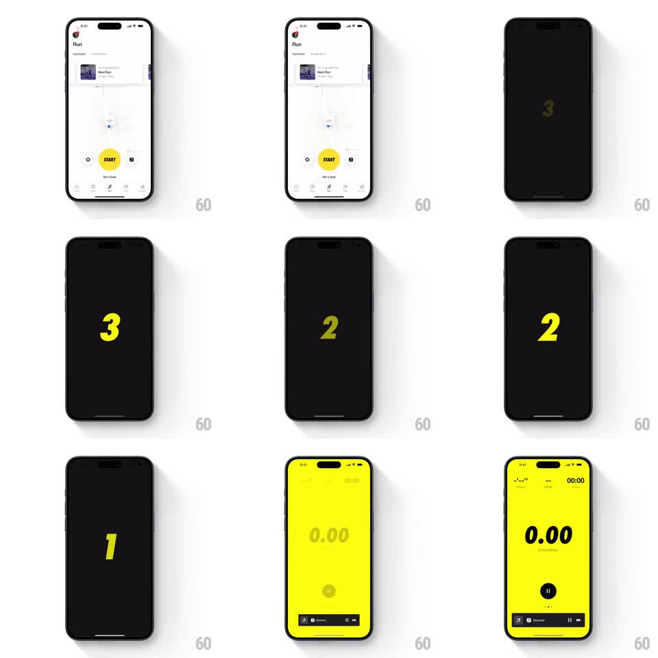

Media
Frame-by-frame

Rebuild this interaction 1:1: Nike Run Club's countdown - tapping START cuts to black, then giant italic volt-yellow numerals count down 3-2-1 before the screen floods volt yellow into the live workout view.

Rebuild this interaction 1:1: Nike Run Club's countdown - tapping START cuts to black, then giant italic volt-yellow numerals count down 3-2-1 before the screen floods volt yellow into the live workout view. ## Integration Integration: stack-agnostic spec - springs given as stiffness/damping, timed motions as duration + curve; map every value to your framework and animation library of choice. ## Scene The Run tab (map, yellow START button). Tap START: the screen cuts to black. Enormous condensed-italic numerals 3, 2, 1 appear one per second in volt yellow. On "1" the whole screen flips to the volt-yellow workout screen: huge "0.00" distance readout, pause button, music controls strip at the bottom. ## Motion spec Pattern: full-screen numeral countdown into color-flood launch. - START compresses (scale 0.94, 100ms) and the screen hard-cuts to black - no fade. - Each numeral slams in: scale 1.3 to 1.0 with a hard spring (~500/30) plus a slight italic lean, holds ~700ms, then exits with a fast scale-down/fade (120ms) as the next lands. One numeral per second, dead-center. - Numerals are volt yellow on black, enormous (~40% of screen height), tightly tracked condensed italic. - After "1", a volt-yellow flood expands from center (or a fast crossfade, 200ms) revealing the workout screen; the "0.00" counter and pause button pop in (spring ~380/24) as the color lands. - The bottom music strip slides up last (200ms, 100ms delay). ## Calibration - Timing is metronomic: one numeral per second, entries and exits included. Any drift breaks the anticipation. - The cut from black to volt is the payoff - make it abrupt and bright, not a slow fade. ## Reduced motion Numerals appear without slam; simple crossfade into the workout screen. ## Don't miss - The workout screen's background IS volt yellow with dark text - the countdown's color becomes the screen. - Numerals use the same condensed italic voice as Nike's typography; a neutral sans kills the brand feel.